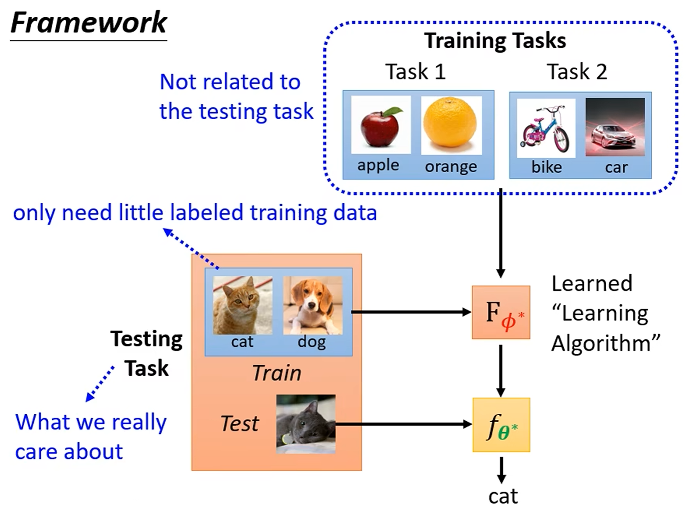

definition
is a hand-crafted Learning algorithm, 参数为hyperparameters. is learned from data.
Meta-learning: 自动学习中的超参数
Steps
Learnable Components
: Learnable components. e.g. Initial Parameters, Net Architecture, Learning Rate, Other hyperparameters…
根据Learnable Components对Meta-Learning的方法进行分类
- Initial Parameters: MAML Model-Agnostic Meta-Learning
- 这里为元初始参数，需要计算关于二阶导来更新
- Optimizer: can be learned by MAML too
- Network Architecture: NAS Network Architecture Search
- 搞一个能输出模型架构的模型，然后RL强行训练，让agent optimize Reward = -Loss
- Data processing:
- Sample Reweighting:
- Learn to compare: Metric-Based
- 模型基于大量的小样本任务进行元训练。每个任务都有一个支持集（例如，每类N个样本）和一个查询集。目的是构造一个通用函数，目标是：将同一类别的样本映射到特征空间中彼此靠近的点，而将不同类别的样本映射到相互远离的点。
- 遇到一个全新的、未见过的任务时，直接输入支持集和查询集，根据在特征空间的距离得到相似度，得到对查询集的分类预测，无需任何梯度更新或微调
Loss Function
is loss function for learning algorithm
使用的数据集：task set 很多任务，每个任务包含training set和test set.
使用定义的训练方法，为task set中每个任务都训练出一个模型，然后测试在对应测试集合上的，再加总
Optimize
- 如果关于可导，那么可以Gradient descent
- 如果不可导，考虑RL

note: develop/validation set
- 训练集（Training Set）：用于训练模型参数。
- 开发集（Validation Set）：用于开发过程中的模型选择与调优。
- 测试集（Test Set）：仅在最终评估模型性能时使用，不参与任何模型选择或调优，以反映模型在未知数据上的泛化能力。
important: 不应当根据测试集的表现来调优参数等
Applications
小样本学习：Few-shot Image Classification